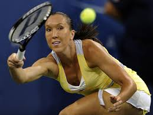
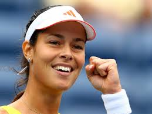
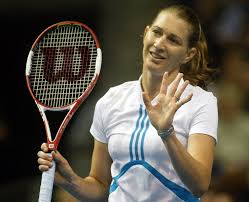

Izvodi se na obeleženom igralištu s reketima i teniskom lopticom po utvrdenim pravilima. Igraci stoje jedan naspram drugoga na mrežicom podijeljenom igralištu i pokušavaju, pomocu teniskog reketa, lopticu vratiti u protivnicko polje tako, da protivnik više nije u mogucnosti, regularnim putem, vratiti udarac.
Veoma uživam prateci tenis, koji je moj omiljeni sport.
  Više o tenisu i takmicenjima možete pronaci na sledecim sajtovima
Roland-Garros. Najprestižniji turnir koji se igra na šljaci.
Wimbledon Naprestižniji turnir koji se igra na travi.
Us open Najprestižniji turnir koji se igra na tvrdoj podlozi.
Pravila igre više o pravilima igre ovde možete pronaci.
Wilson. Ovde možete pronaci tenisku opremu.
Najprestižniji turniri koji se igraju tokom godine su:
Podloga na kojoj se igra su sledece:
Udarci se dele na sledece: